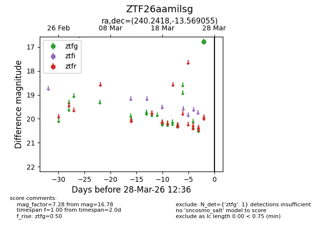
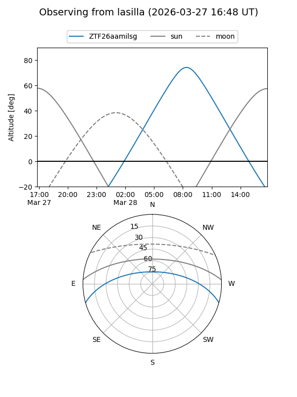
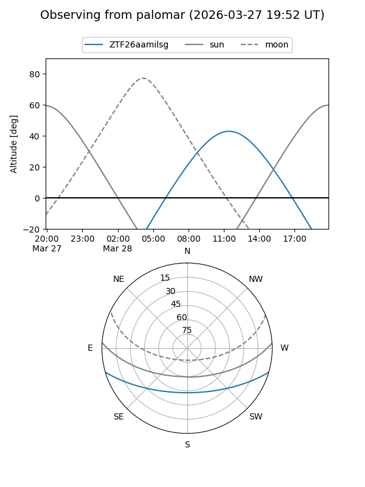

ZTF26aamilsg
Target ZTF26aamilsg at 2026-03-28 12:40
Aliases and brokers:
FINK: link
Lasair: link
ALeRCE: link
alt names
ZTF26aamilsg (ztf,fink_ztf)
Coordinates:
equatorial (ra, dec) = 240.2418,-13.56906
equatorial (HMS+DMS) = 16:00:58.03,-13:34:08.60
galactic (l, b) = (357.5018,+28.60783)
Flags:
Photometry:
last ztfg=16.78
1 ztfg detections
Lightcurve

Visibility


Additional plots